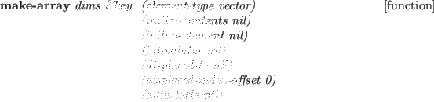

Up to seven dimensional arrays are allowed.
A one-dimensional array is called vector.
Vectors and lists are grouped as sequence.
If the elements of an array is of any type, the array is said to be general.
If an array does not have fill-pointer, is not displaced to
another array, or is adjustable, the array is said to be simple.
Every array element can be recalled by aref and set by setf in
conjunction with aref.
But for simple vectors, there are simpler and faster access functions:
svref for simple general vectors, char and schar for
simple character vectors (string), bit and sbit for
simple bit vectors. When these functions are compiled,
the access is expanded in-line and no type check and boundary check are
performed.
Since a vector is also an object,
it can be made by instantiating some vector-class.
There are five kinds of built-in vector-classes;
vector, string, float-vector, integer-vector and bit-vector.
In order to ease instantiation of vectors, the function make-array
is provided.
Element-type should be one of :integer, :bit, :character, :float, :foreign
or user-defined vector class.
:initial-element and :initial-contents key word arguments are
available to set initial values of the array you make.
array-rank-limit [constant]
-
- 7
array-dimension-limit [constant]
-
- #x1fffffff, logically, but stricter
limit is imposed by the physical or virtual memory size of the system.
vectorp object [function]
-
-
An array is not a vector even if it is one dimensional.
T is returned for vectors, integer-vectors, float-vectors, strings,
bit-vectors or other user-defined vectors.
vector &rest elements [function]
-
-
makes a simple vector from elements.

-
- makes a vector or array.
dims is either an integer or a list.
If dims is an integer, a simple-vector is created.
svref vector pos [function]
-
-
returns posth element of vector.
Vector must be a simple general vector.
aref vector &rest (indices) [function]
-
-
returns the element indexed by indices.
Aref is not very efficient
because it needs to dispatch according to the type of vector.
Type declarations should be given to improve the speed of compiled code
whenever possible.
vector-push val array [function]
-
-
store val at the fill-pointerth slot in array.
array must have a fill-pointer.
After val is stored,
the fill-pointer is advanced by one to point to the next location.
If it exceeds the array boundary, an error is reported.
vector-push-extend val array [function]
-
-
Similar to vector-push except that
the size of the array is automatically extended
when array's fill-pointer reaches the end.
arrayp obj [function]
-
- T if obj is an instance of array or vector.
array-total-size array [function]
-
- returns the total number of elements
of array.
fill-pointer array [function]
-
-
array-rank array [function]
-
-
array-dimensions array [function]
-
-
returns a list of array-dimensions.
array-dimension array axis [function]
-
-
Axis starts from 0. array-dimension returns the axisth
dimension of array.
bit bitvec index [function]
-
-
returns the indexth element of bitvec.
Use setf and bit to change an element of a bit-vector.
bit-and bits1 bits2 &optional result [function]
-
-
bit-ior bits1 bits2 &optional result [function]
-
-
bit-xor bits1 bits2 &optional result [function]
-
-
bit-eqv bits1 bits2 &optional result [function]
-
-
bit-nand bits1 bits2 &optional result [function]
-
-
bit-nor bits1 bits2 &optional result [function]
-
-
bit-not bits1 &optional result [function]
-
-
For bit vectors bits1 and bits2 of the same length,
their boolean and, inclusive-or,
exclusive-or, equivalence, not-and, not-or and not are returned, respectively.
2016-03-23